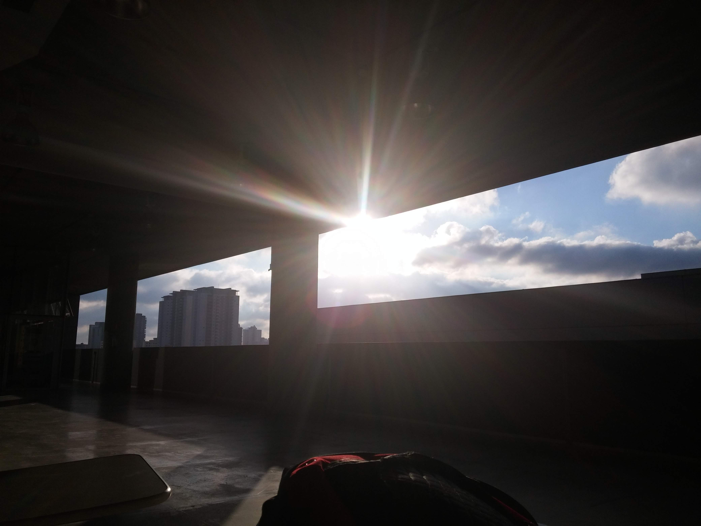
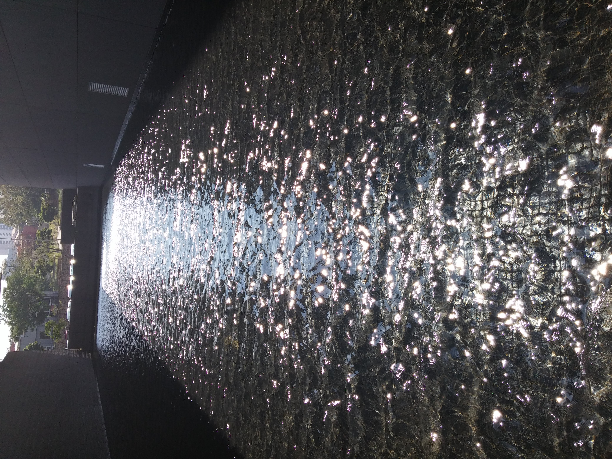
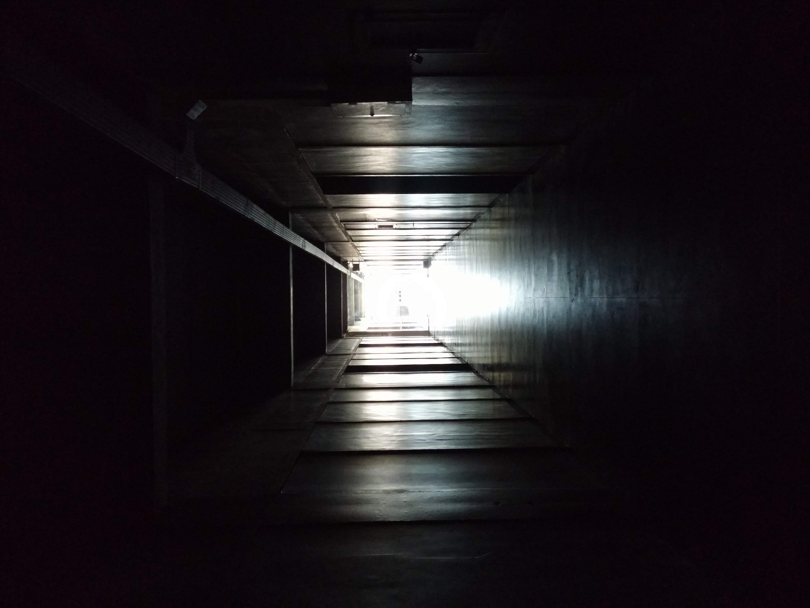
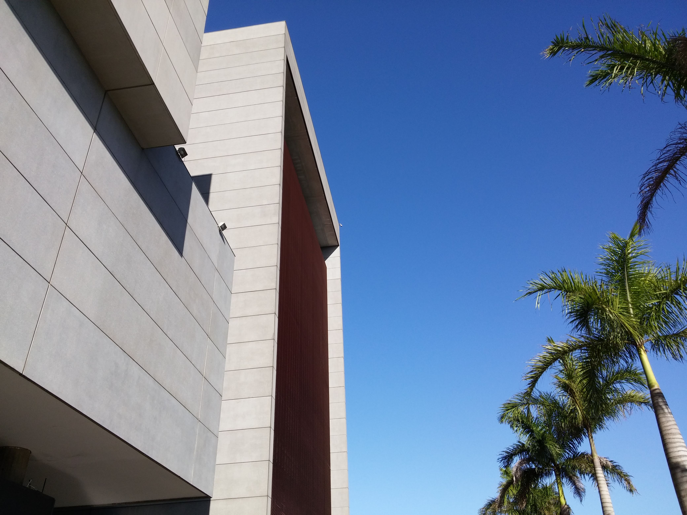
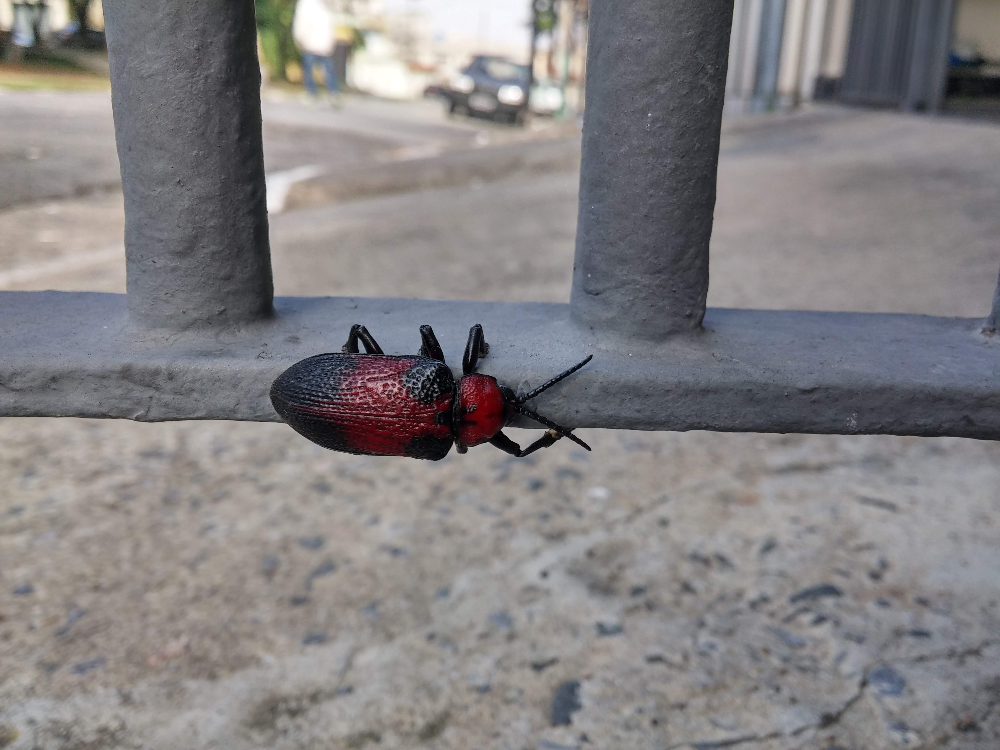
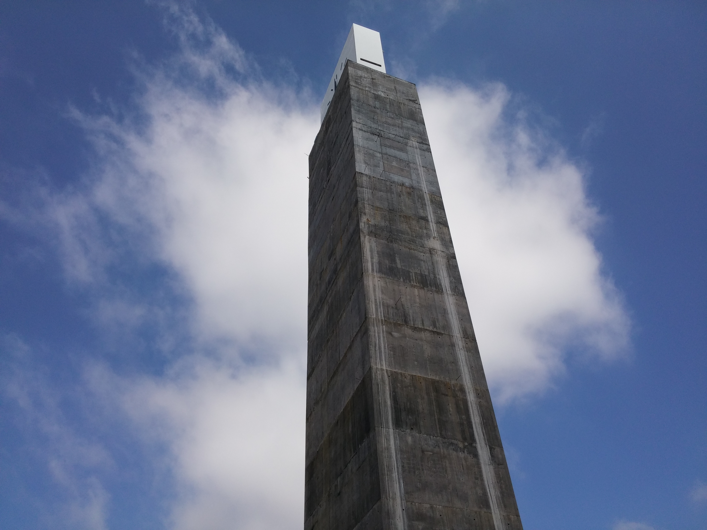
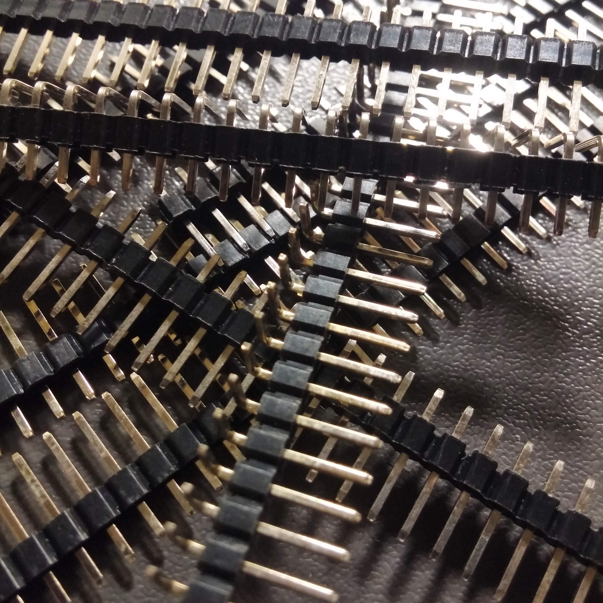

Minhas Fotos
Sempre gostei de fotografia, nos últimos anos, tenho explorando a relação de luz e sombra dos cenários. Estas são algumas das que tirei neste período. Também tenho interesse em detalhes, coisas que passariam despercebidas ao olhar.






